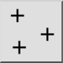
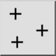

Menu: Tekenen > Punt > Enkel punt
Sneltoets: P, O
Commando's: point | po
Werkbalk / icoon:
 

Menu: Tekenen > Punt > Enkel punt
Sneltoets: P, O
Commando's: point | po
Beschrijving:
Dit commando wordt gebruikt om enkele punten te tekenen. Punten worden visueel weergegeven door een klein kruisje.
Procedure: